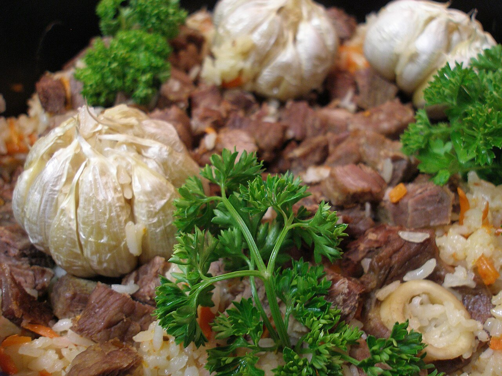
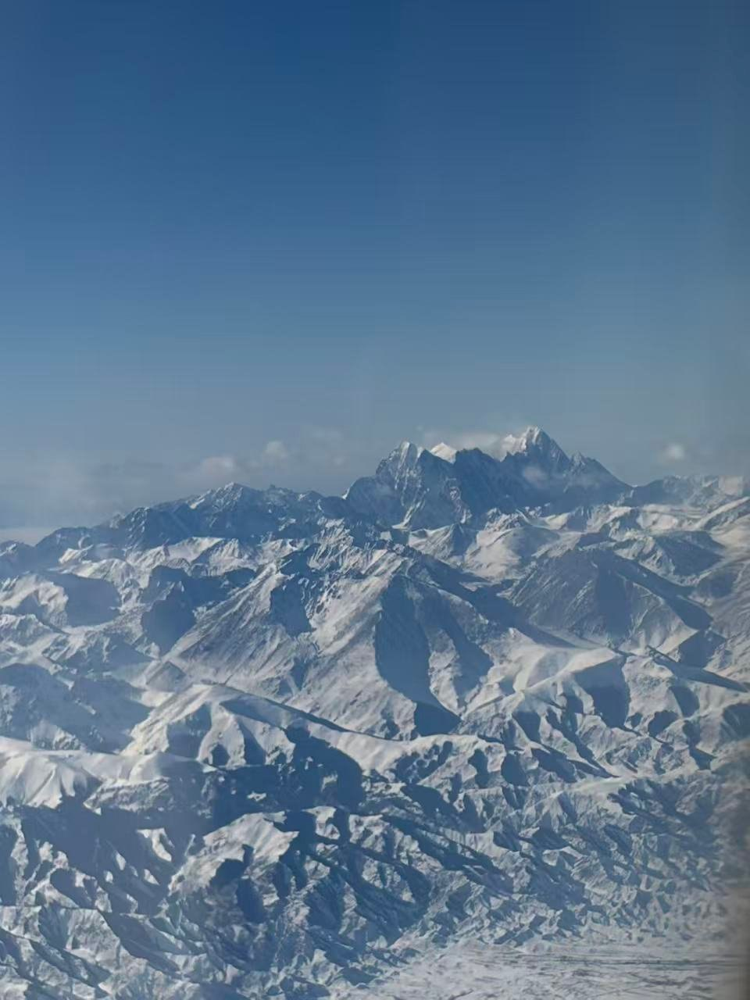
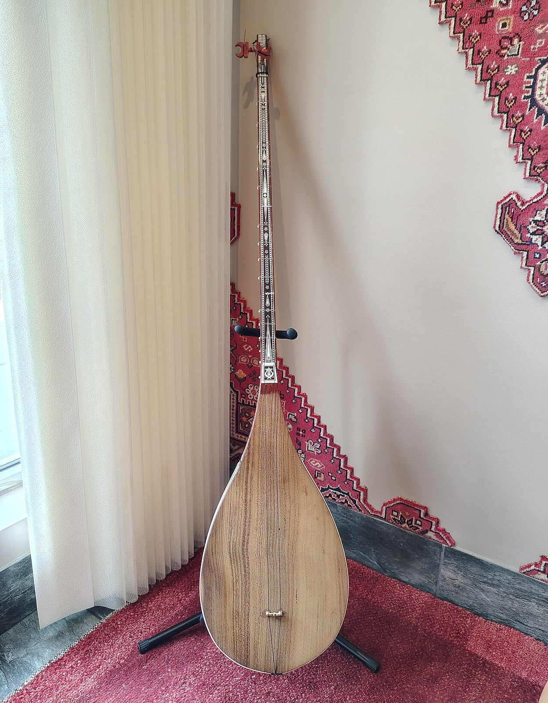
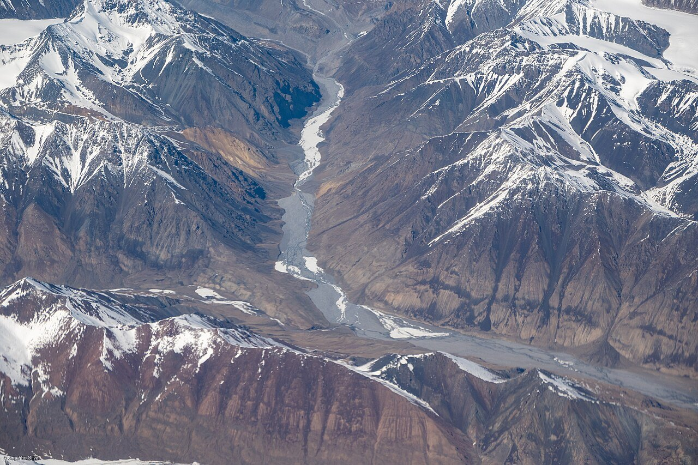
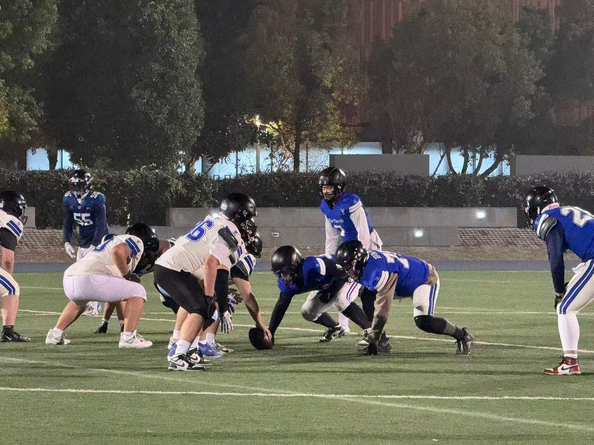
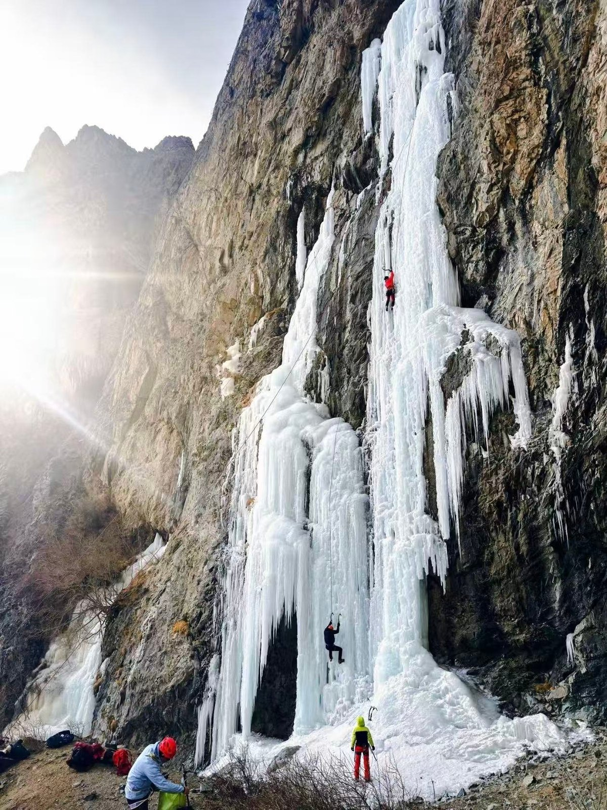
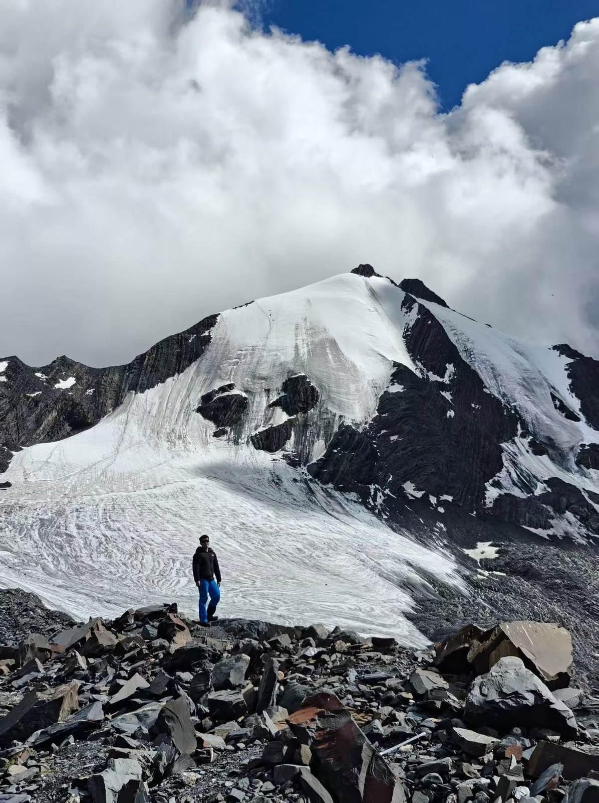
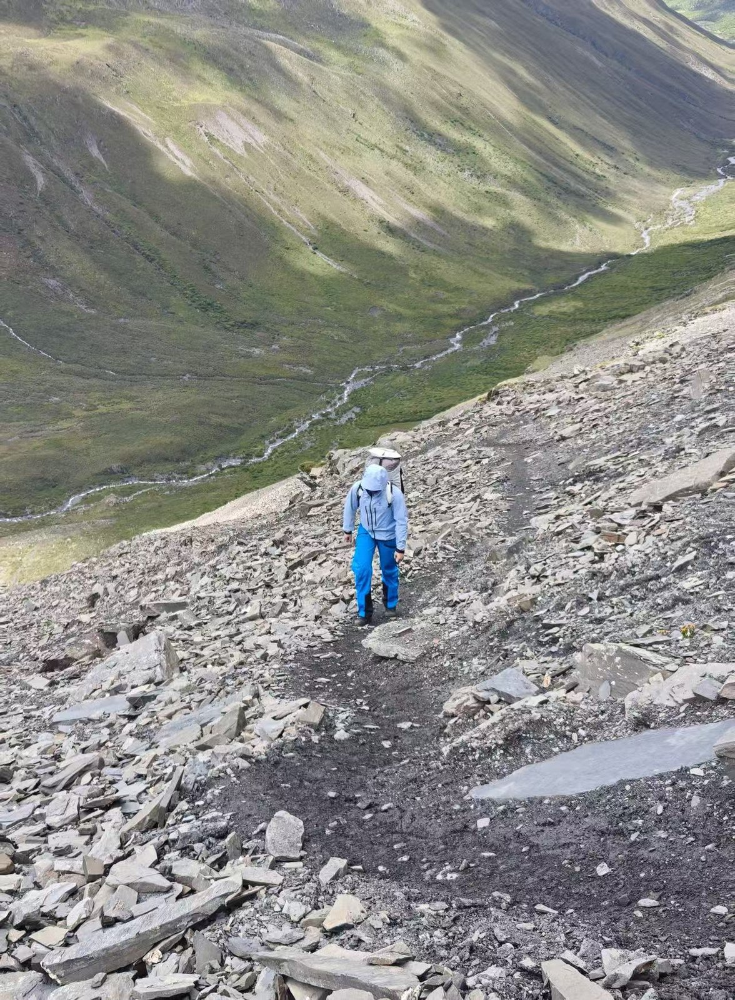

Food
Eat first.
Polo, hand-pulled noodles, naan, kebabs, tea. The table is generous and direct: lamb, wheat, fruit, and enough time for everyone to sit down.
Xinjiang · Football · Mountains
从新疆走向世界
I am Zhihua Yang, a computer science student at Xi'an Jiaotong-Liverpool University. I grew up in Xinjiang, play American football, and spend my free time on ice and rock.

01 — Roots
I am from Xinjiang, in the northwest of China. It is a place best understood through three things: what is on the table, who is around it, and the land outside the window.
Food, culture and landscape are not separate chapters of the region. They explain each other: the wheat and lamb on the table, the languages and music in the street, the snow and desert that set the scale of the day.

Food
Polo, hand-pulled noodles, naan, kebabs, tea. The table is generous and direct: lamb, wheat, fruit, and enough time for everyone to sit down.

Culture
Xinjiang is a meeting point of languages, music and craft. The dutar's long neck, the geometry of a carpet, the noise of a bazaar: culture here is plural and lived.

Landscape
Snow mountains, glacier valleys, grassland and desert. The horizon is not a backdrop; it sets the pace of the day.
Distance is not empty space. It is where you learn to plan.
Xinjiang photographs via Wikimedia Commons, resized for the web: Rjanag (CC BY-SA 3.0), Yuet Man Lee (CC BY-SA 4.0), xiquinhosilva (CC BY 2.0).

02 — Football
I play American football. It is a team sport in the most literal sense: every play depends on the person beside you doing their job. I have learned to communicate when it is loud, to reset after a mistake, and to watch the film even when the result hurts.
The field is also where I learned that preparation is quiet. The visible play lasts a few seconds; the work that makes it possible happens all week.
03 — Mountains

Ice climbing and glacier travel are the most honest feedback I know. The route does not care how confident you feel; it cares whether your knots are right, your layers are dry, and your turnaround time is fixed before you start.
I climb because it compresses a whole day of decisions into a few hours: when to move, when to wait, and when to turn around. The best days are not always the ones that reach the top.


04 — Outlook
The mountain and the road have the same lesson: prepare, measure, and leave room to turn back.
Zhihua Yang